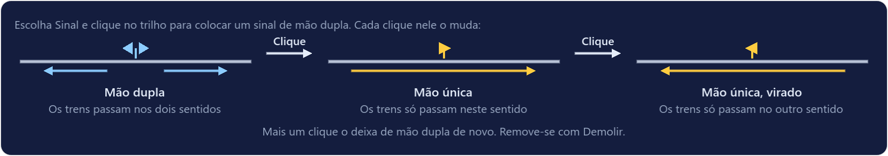

Sinais
Manter os trens separados.
Os sinais dividem uma linha em blocos para que os trens esperem uns pelos outros e não colidam. Para começar você não precisa de nenhum: entroncamentos e desvios já mantêm os trens separados. Os sinais deixam mais trens dividirem uma linha movimentada.
Colocar sinais
- Escolha Sinal (9) em Ferrovia e clique num trecho de trilho. Cada um custa $ 600.
- Os sinais ficam em trilho reto ou diagonal, não em curvas, entroncamentos, plataformas nem passagens de nível.
- Clique de novo num sinal para torná-lo de mão única, mais uma vez para o outro sentido e mais uma para mão dupla.
- Os sinais são removidos com Demolir.


Para que lado aponta?
- Com Sinal escolhido, cada sinal mostra uma seta por cima: com ponta nas duas extremidades num sinal de mão dupla, com uma só ponta num sinal de mão única, apontando para onde os trens podem passar.
- O sinal sob o mouse mostra em branco como ficaria com um clique, e a nota ao lado do mouse diz isso em palavras.
- Sem a ferramenta, olhe as luzes: um sinal de mão dupla tem uma luz em cada face do poste; um de mão única tem uma, voltada para os trens que deixa passar.
Blocos
- O trecho de trilho entre dois sinais é um bloco. Um trem só passa um sinal quando o bloco seguinte está vazio; senão, espera.
- Cada entroncamento é um bloco próprio, com sinais ou sem. Um trem só entra num entroncamento quando ele está livre, e também o trilho por onde sai dele, até o próximo entroncamento ou sinal.
- Os trens só esperam nos sinais e diante dos entroncamentos. Em outros lugares, os trens na mesma via colidem: os dois ficam destruídos, com tudo o que levam, e os destroços bloqueiam a linha por algumas semanas.
- Um sinal de mão única só deixa os trens passarem no sentido dele, e os trens planejam a rota contando com isso.
Acidentes ferroviários
- Quando dois trens colidem, os dois ficam destruídos com tudo o que levam, e nada é devolvido. As notícias informam, e sai fumaça do local por alguns dias.
- Um trem num depósito não pode ser atingido, nem um que passa sob uma ponte que outro trem está cruzando. Ônibus e caminhões nunca colidem.
- Durante a manutenção, os vagões que ficam fora do depósito continuam ocupando a via.
- Um acidente perto de uma cidade reduz a avaliação de cada empresa envolvida junto à prefeitura. Veja Prefeituras.
- Para rodar mais de um trem numa via única, coloque desvios onde os trens se cruzam.
A seguir: Desvios.